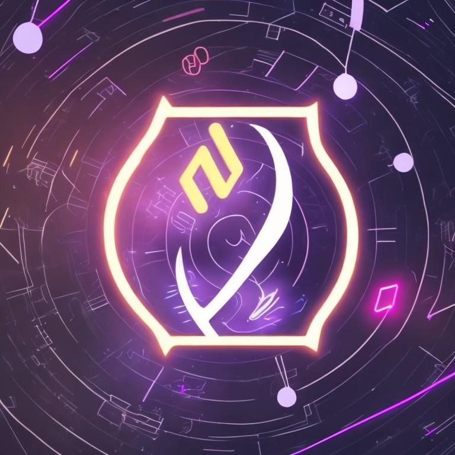

Welcome to Roller DAO
Roller DAO is a crowdfunding platform that allows creators to seek funding for their projects. Backers can support these projects by locking their tokens, and if the project meets its funding goal, backers will receive rewards from the creator.
View Projects Create a ProjectProjects
-
Project Title
Project Description
Funding Goal: X tokens
Deadline: Month XX, 20XX
Back this Project -
Project Title
Project Description
Funding Goal: X tokens
Deadline: Month XX, 20XX
Back this Project
Create a Project
About Roller DAO
Roller Dao is a crowdfunding platform, built and executed as a Roll up in the Cartesi ecosystem. Roller DAO creators look for funding to develop their projects. In order to do this, they submit a summary of how the project is going to work and the necessary steps to make it happen. They set their project’s funding goal and deadline. Users in the role of sponsors or backers, are able to support creators' ideas, by linking their wallets and locking their tokens to help make the idea happen, within the deadline previously established. If the project succeeds in reaching its funding goal, tokens will be given to the creator in different stages, stated previously and according to the project development. Sponsors will be rewarded with benefits by creators. This will be beforehand established by creators. If the project doesn’t succeed in reaching its funding goal, tokens will be returned to backers.